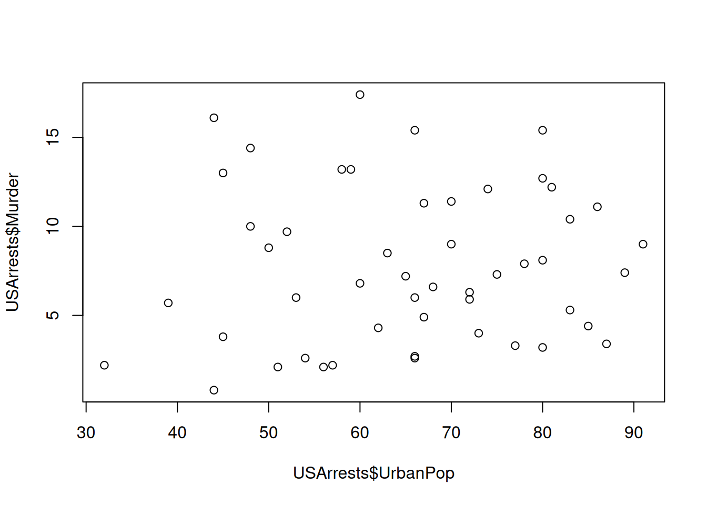
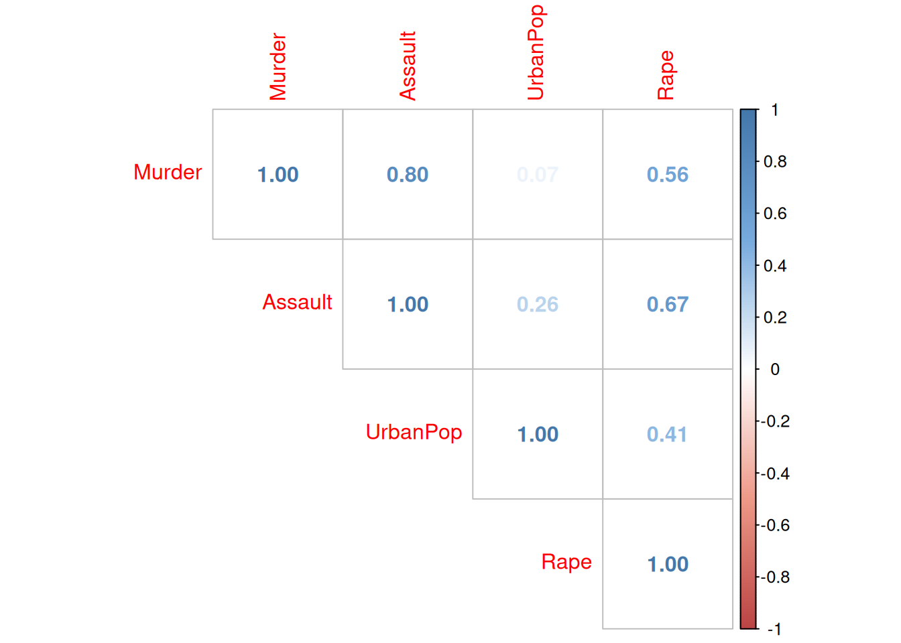
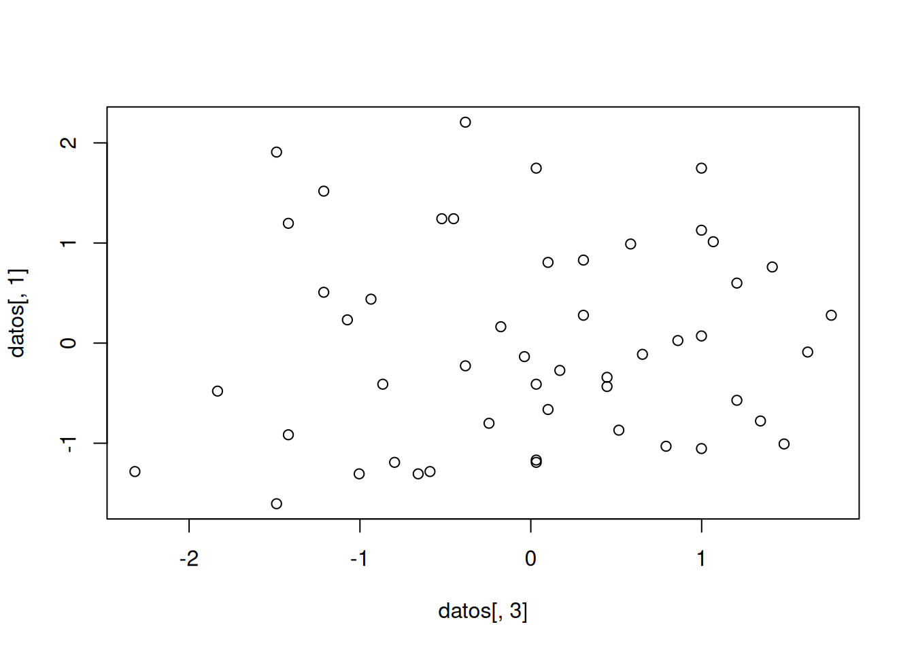
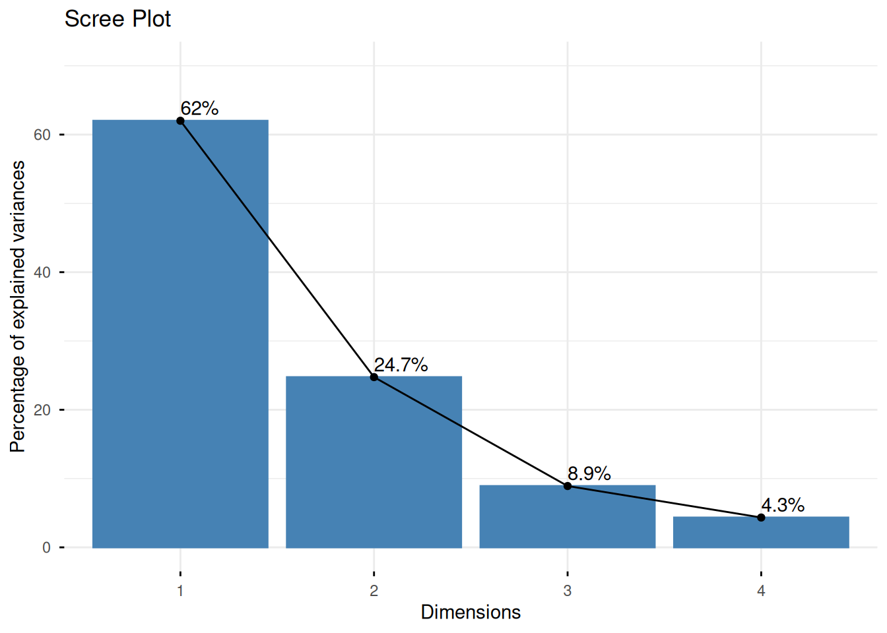
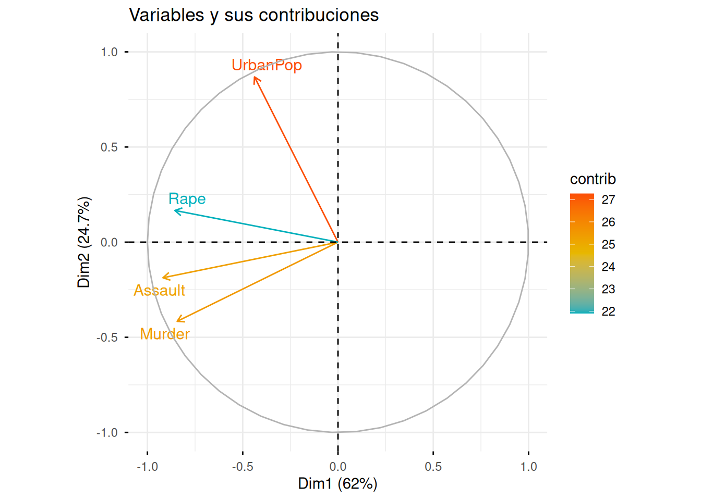

library(tidyverse)── Attaching core tidyverse packages ──────────────────────── tidyverse 2.0.0 ──
✔ dplyr 1.2.1 ✔ readr 2.2.0
✔ forcats 1.0.1 ✔ stringr 1.6.0
✔ ggplot2 4.0.2 ✔ tibble 3.3.1
✔ lubridate 1.9.5 ✔ tidyr 1.3.2
✔ purrr 1.2.1
── Conflicts ────────────────────────────────────────── tidyverse_conflicts() ──
✖ dplyr::filter() masks stats::filter()
✖ dplyr::lag() masks stats::lag()
ℹ Use the conflicted package (<http://conflicted.r-lib.org/>) to force all conflicts to become errorslibrary(factoextra)Welcome to factoextra!
Want to learn more? See two factoextra-related books at https://www.datanovia.com/en/product/practical-guide-to-principal-component-methods-in-r/library(patchwork)
library(corrplot)corrplot 0.95 loadedUSArrests Murder Assault UrbanPop Rape
Alabama 13.2 236 58 21.2
Alaska 10.0 263 48 44.5
Arizona 8.1 294 80 31.0
Arkansas 8.8 190 50 19.5
California 9.0 276 91 40.6
Colorado 7.9 204 78 38.7
Connecticut 3.3 110 77 11.1
Delaware 5.9 238 72 15.8
Florida 15.4 335 80 31.9
Georgia 17.4 211 60 25.8
Hawaii 5.3 46 83 20.2
Idaho 2.6 120 54 14.2
Illinois 10.4 249 83 24.0
Indiana 7.2 113 65 21.0
Iowa 2.2 56 57 11.3
Kansas 6.0 115 66 18.0
Kentucky 9.7 109 52 16.3
Louisiana 15.4 249 66 22.2
Maine 2.1 83 51 7.8
Maryland 11.3 300 67 27.8
Massachusetts 4.4 149 85 16.3
Michigan 12.1 255 74 35.1
Minnesota 2.7 72 66 14.9
Mississippi 16.1 259 44 17.1
Missouri 9.0 178 70 28.2
Montana 6.0 109 53 16.4
Nebraska 4.3 102 62 16.5
Nevada 12.2 252 81 46.0
New Hampshire 2.1 57 56 9.5
New Jersey 7.4 159 89 18.8
New Mexico 11.4 285 70 32.1
New York 11.1 254 86 26.1
North Carolina 13.0 337 45 16.1
North Dakota 0.8 45 44 7.3
Ohio 7.3 120 75 21.4
Oklahoma 6.6 151 68 20.0
Oregon 4.9 159 67 29.3
Pennsylvania 6.3 106 72 14.9
Rhode Island 3.4 174 87 8.3
South Carolina 14.4 279 48 22.5
South Dakota 3.8 86 45 12.8
Tennessee 13.2 188 59 26.9
Texas 12.7 201 80 25.5
Utah 3.2 120 80 22.9
Vermont 2.2 48 32 11.2
Virginia 8.5 156 63 20.7
Washington 4.0 145 73 26.2
West Virginia 5.7 81 39 9.3
Wisconsin 2.6 53 66 10.8
Wyoming 6.8 161 60 15.6plot(USArrests$UrbanPop, USArrests$Murder)
cor(USArrests) |>
corrplot(method = "number", type = "upper",
col = colorRampPalette(c("#BB4444", "#EE9988", "#FFFFFF", "#77AADD", "#4477AA"))(200))
datos <- scale(USArrests, center = TRUE, scale = TRUE)
colnames(datos) <- colnames(USArrests)
plot(datos[,3], datos[,1])
acp <- prcomp(USArrests, center = TRUE, scale = TRUE)
fviz_eig(acp, addlabels = TRUE, ylim = c(0, 70), title = "Scree Plot")
# Contribuciones a las dos primeras componentes
fviz_pca_var(acp, col.var = "contrib",
gradient.cols = c("#00AFBB", "#E7B800", "#FC4E07"),
repel = TRUE, title = "Variables y sus contribuciones")
acp$sdev[1] 1.5748783 0.9948694 0.5971291 0.4164494acp$rotation PC1 PC2 PC3 PC4
Murder -0.5358995 -0.4181809 0.3412327 0.64922780
Assault -0.5831836 -0.1879856 0.2681484 -0.74340748
UrbanPop -0.2781909 0.8728062 0.3780158 0.13387773
Rape -0.5434321 0.1673186 -0.8177779 0.08902432